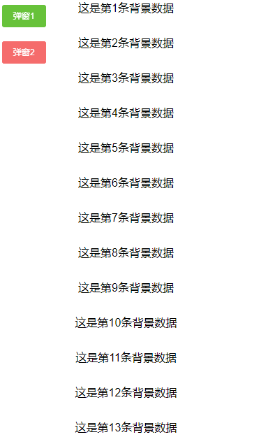
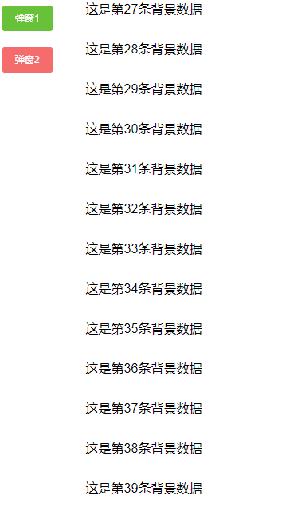

vue 弹窗屏蔽滑动的两种解决方案
解决方案
两种解决方案，针对两种不同情况：
- 弹框数据少，无需滑动
- 弹框内数据需要滑动展示
1. 无需滑动弹窗
a. 思路
vue自带修饰符可解决该问题——
@touchmove.prevent
此方案重点在将@touchmove.prevent绑定到弹窗模块，然后动态控制弹窗显示隐藏即可。
b. 效果

c. 代码
<template>
<div class="modalTest">
<!-- 按钮组 -->
<div class="btn">
<el-button type="success" size="small" @click="modalSign1 = true">弹窗1</el-button>
</div>
<!-- 背景数据 -->
<div class="listBG">
<ul>
<li v-for="item in 50">这是第条背景数据</li>
</ul>
</div>
<!-- 弹框1 -->
<div
class="modalBox"
v-if="modalSign1"
@touchmove.prevent
@click.self="modalSign1 = false">
<div class="modal">
<ul>
<li v-for="item in 8">这是第条数据</li>
</ul>
</div>
</div>
</div>
</template>
<script>
export default {
data() {
return {
modalSign1: false // 弹窗是否打开
}
}
}
</script>
2. 弹框内数据需要滑动展示
a. 思路
首先，我们使用正常的vue操作，比如刚才的修饰符/语法糖进行操作时，虽然可以屏蔽掉背景数据滑动，但是该事件同时会将弹框内的滑动也阻止掉，我们则无法完成该需求。如果这个不行，我们还有别的方法来完成需求吗？
我考虑到一种方案，但是属于DOM操作，与vue的初衷可能不太符合。不过此方案也不矢为一种能够有效解决问题的办法。
思路：利用css
position: fixed以及top: x px来固定位置。步骤分解如下：
写一个样式放到公共css中备用；
点击按钮，控制弹窗显示隐藏；
两个方法，一个控制将
步骤1写的css动态添加到body上，另外一个则控制移除该效果；添加方法：
①获取当前页面距离顶部高度，保存到data中；
②给body添加
步骤1的css；③设置body的高度为刚才获取到的高度。
移除方法：
①将刚才给body添加的css移除；
②当前滑动高度设置为data中存储的高度。
b. 效果

c. 两个案例完整代码
<template>
<div class="modalTest">
<!-- 按钮组 -->
<div class="btn">
<el-button type="success" size="small" @click="modalSign1 = true">弹窗1</el-button>
<br>
<el-button type="danger" size="small" @click="openModal">弹窗2</el-button>
</div>
<!-- 背景数据 -->
<div class="listBG">
<ul>
<li v-for="item in 50">这是第条背景数据</li>
</ul>
</div>
<!-- 弹框1 -->
<div
class="modalBox"
v-if="modalSign1"
@touchmove.prevent
@click.self="modalSign1 = false">
<div class="modal">
<ul>
<li v-for="item in 8">这是第条数据</li>
</ul>
</div>
</div>
<!-- 弹框2 -->
<div class="modalBox" v-if="modalSign2" @click.self="closeModal">
<div class="modal">
<ul>
<li v-for="item in 20">这是第条数据</li>
</ul>
</div>
</div>
</div>
</template>
<script>
export default {
data() {
return {
modalSign1: false, // 弹窗是否打开
modalSign2: false, // 弹窗是否打开
scrollTop: undefined, // 距离顶端的值
className: 'modalOpen' // 类名
}
},
methods: {
// 打开弹层 要做的事
afterOpen() {
this.scrollTop = document.scrollingElement.scrollTop;
document.body.classList.add(this.className);
document.body.style.top = `-${this.scrollTop}px`;
},
// 弹层关闭之前 要做的事
beforeClose() {
document.body.classList.remove(this.className);
document.scrollingElement.scrollTop = this.scrollTop;
},
// 打开弹窗
openModal() {
this.modalSign2 = true;
this.afterOpen();
},
// 关闭弹窗
closeModal() {
this.modalSign2 = false;
this.beforeClose();
}
},
mounted() {
}
}
</script>
<style type="text/scss" lang="scss" scoped>
.modalTest{
width: 100%;
min-height: 100vh;
overflow: scroll;
.btn{
padding: 10px;
position: fixed;
top: 0;
left: 0;
z-index: 10;
&>button{
margin: 10px 0;
}
}
.listBG{
text-align: center;
line-height: 50px;
}
.modalBox{
width: 100vw;
height: 100vh;
overflow: hidden;
position: fixed;
top: 0;
left: 0;
background: rgba(0,0,0,0.4);
z-index: 999;
.modal{
width: 220px;
height: 280px;
overflow: scroll;
background: #fff;
border-radius: 10px;
position: absolute;
left: 50%;
top: 50%;
transform: translate(-50%, -50%);
box-shadow:10px 10px 9px #332A0D;
padding: 30px 0 0;
ul{
text-align: center;
li{
list-style: none;
line-height: 30px;
}
}
}
}
}
</style>
d. 备注
.modalOpen的css样式，放在公共样式中，因为我们要改变的是body的样式，因此在组件中写的样式可能会失效。例如，我将样式放在了src/assets/css/common.css
/* 弹层 */
body.modalOpen {
-webkit-overflow-scrolling: touch;
position: fixed;
width: 100%;
}